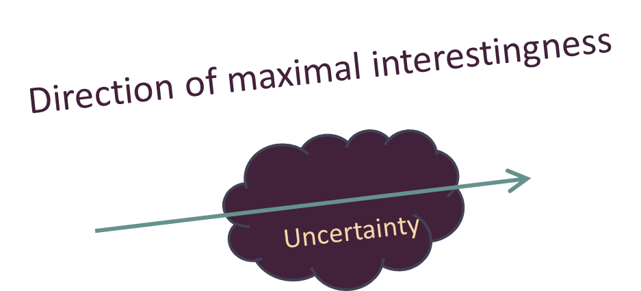

Consensus approximatif et passion débridée
Le logiciel a une particularité qui peut sembler très étrange : on peut créer les plus utiles des logiciels sans avoir à débourser le moindre centime. Et même comme a pu le dire Sam Penrose, un ingénieur de Mozilla, programmer un logiciel est un travail qui crée un capital. Cette caractéristique fait du logiciel une activité radicalement différente des autres domaines de l’ingénierie tels que la métallurgie et le rapproche d’activités artistiques comme la peinture1. C’est pourquoi les termes ingénieur et ingénierie peuvent paraître inappropriés pour parler de logiciel. Penser le logiciel comme une sorte de « matériau » a quelque chose de réducteur. Bien que le logiciel demande un substrat physique – les milliards d’électrons qui circulent dans les circuits de l’ordinateur – la réalité physique d’un programme est difficilement palpable. Le papier est ce qui se rapproche le plus de ce nouveau médium. Mais même le papier n’est ni aussi bon marché ni aussi insaisissable. Même si l’on peut mesurer la créativité débridée des poètes de l’ère industrielle aux montagnes de papier froissé qui s’entassent dans leurs poubelles, nous ne pouvons nous empêcher de penser que cela constitue un certain gaspillage. Le papier constitue presque le médium parfait pour la créativité la plus débridée mais rate le coche de peu.
Le logiciel, au contraire, est un médium qui non seulement peut mais surtout doit être envisagé en ayant à l’esprit l’idée d’abondance. Un bon logiciel ne saurait exister sans des cycles d’essais- erreurs à répétition ; ce qui pourrait passer pour du gaspillage et qui mènerait des projets industriels ou artistiques à la ruine est un passage obligé dans le logiciel. Des premiers temps de l’informatique, quand les programmeurs développaient des jeux pendant que des problèmes « sérieux » attendaient du temps machine disponible, jusqu’aux reproches qu’ils font aujourd’hui aux applications « triviales » (et qui pourtant sont souvent révolutionnaires), ceux qui envisagent les choses en termes de rareté comme un jeu à somme nulle ont été incapables de prendre pleinement conscience de ce qui constitue l’essence du logiciel depuis cinquante ans.
La raison de cette différence de vue est simple : pour les puristes qui ont une vision idéale des choses, la planification et tout ce qui peut faire baisser leur degré d’incertitude est de nature à les rassurer quant à la valeur d’un projet. D’ailleurs, ils voient le marketing de la même façon – exactement comme les dîners privés où l’on utilise des services de porcelaine – et c’est pour cela qu’ils concentrent des ressources rares dans des domaines comme l’architecture. Dans un monde d’abondance, au contraire, mettre une telle vision au service d’un objectif marketing est beaucoup moins nécessaire. Tout ce dont on a besoin, c’est de donner aux équipes de développement une idée à peu près correcte de la direction à suivre puis de les laisser créer ce qui deviendra un capital en les laissant exprimer leurs points de vue et utiliser les outils de leur choix ; exactement comme les invités d’une soirée à la fortune du pot apportent ce qu’ils pensent être nécessaire à la réussite de la soirée.
Traduite en termes techniques, la comparaison avec le service de table est au cœur de l’ingénierie logicielle. Les visions puristes émergent en général quand des architectes autoritaires essaient de concentrer des ressources rares et de les utiliser à l’optimum en croyant sincèrement que cela sera idéal pour tout le monde. Le « bricolage », au contraire, se concentre sur une progression par petits pas plutôt que sur des grands jalons censés participer à la réalisation d’une vision globale. Cette façon de voir les choses se fonde sur une approche qui intègre la dimension individuelle et qui ne se focalise pas en permanence sur des objectifs paternalistes et grandiloquents « d’intérêt général ». Il en résulte que les visions des puristes semblent en apparence mieux construites et plus satisfaisantes intellectuellement, alors que l’approche pragmatique des hackers a une allure plus confuse et désordonnée. Les visions puristes s’adaptent ainsi beaucoup moins bien aux changements et aux bidouillages alors que l’approche pragmatique des hackers est largement ouverte aux deux.
Au sein de la communauté informatique, on a reconnu l’importance des approches s’appuyant sur l’abondance dès les années 1960. La loi de Moore a été à l’origine d’un mouvement qui a permis à des chercheurs en informatique comme Alan Kay de formaliser l’usage de l’abondance sous la forme d’un aphorisme qui recommande aux programmeurs de « gaspiller de la puissance de calcul » pour tirer pleinement partie de l’informatique.
Aujourd’hui encore, ce principe reste difficile à suivre, même pour les jeunes ingénieurs qui ont pourtant l’habitude d’utiliser des fermes de serveurs en temps réel. Consacrer du temps et des moyens à des bricolages amusants apparaît encore mauvais quand des problèmes réels et sérieux attendent une solution depuis des lustres. Le film Comment claquer un million de dollars par jour, dans lequel le héros hérite de trois cent millions de dollars à la condition qu’il en gaspille d’abord trente en pure perte, peut servir d’exemple aux informaticiens qui doivent abandonner les habitudes nées de la rareté avant de pouvoir être productifs dans leur environnement.
Le principe d’un consensus approximatif et du code qui fonctionne constitue l’essence même du paradigme d’abondance dans le logiciel.
Si vous avez l’habitude de travailler dans des organisations habituées aux méthodes autoritaires de gestion de projet, peut-être pensez-vous que la pratique du consensus approximatif a quelque chose de comparable à une sorte de conciliabule informel ? Cette comparaison est simplificatrice. Dans les entreprises traditionnelles, la recherche du consensus est le fait de ceux qui sont à l’écoute des autres, qui comprennent les contraintes, qui cherchent l’harmonie et qui excellent à « équilibrer » les positions tranchées des différentes forces en présence. C’est la méthode qui prévaut quand on cherche un consensus dans une situation où l’on doit faire face à la rareté. Cette pratique du consensus qui date de l’ère industrielle a habituellement une allocation limitée de ressources. Dans de telles conditions, la recherche du compromis indique un esprit de partage et de savoir-vivre. Malheureusement, quand le compromis est difficile à trouver et qu’il faudrait faire preuve d’imagination, c’est aussi une excellente méthode pour aller droit dans le mur.
Le développement informatique, en revanche, favorise les individus qui ont une propension autocratique et qui envisagent sans concession la façon dont les choses devraient être conçues et développées, ce qui à première vue semble contredire l’idée même de consensus.
Paradoxalement, la philosophie de l’IETF, qui « rejette les rois, les présidents et le vote » s’adresse à des communautés qui rassemblent des individualités fortes. Elle permet d’aboutir à des situations tranchées. Ou bien un consensus approximatif se crée et chacun y adhère fortement. Ou bien, faute d’accord, la communauté se sépare et chacun poursuit sa propre idée. Les conflits ne se soldent pas par des compromis qui finissent par frustrer tout le monde. Ils sont, au contraire, tranchés par un principe dont le prospectiviste Bob Sutton pense qu’il est indispensable pour naviguer sur les océans de l’incertitude : des idées arrêtées, mais qui peuvent changer.
Au contraires des dictateurs modernistes étudiés par James Scott, les pragmatistes tiennent des positions arrêtées en se fondant sur le fait d’avoir contribué à écrire du code qui fonctionne et non des visions abstraites. De la même façon, ils considèrent les autres comme des pairs autonomes plutôt que comme des subordonnés disciplinés ou des rivaux. Face à un conflit, ils sont prêts soit à déployer une grande force de persuasion, soit à se laisser convaincre, soit à laisser tomber.
La pratique du consensus approximatif a tendance à favoriser les individus qui, dans les organisations traditionnelles, auraient été vus comme perturbateurs et bornés : précisément le type de personnes aptes à « breaking smart ». Pris dans son sens le plus pur, le consensus approximatif consiste à trouver le meilleur chemin possible et pas à naviguer entre les contraintes. Dans le logiciel, les contraintes ont tendance à être évidentes et peu nombreuses. L’étendue des possibilités, en revanche, coupe le souffle. Partant, les défis à relever consistent à éviter de penser à la petite semaine, à trouver les directions les plus prometteuses et à s’entourer des bonnes personnes.
Dans une dynamique qui peut rappeler la « règle d’accord » du théâtre d’improvisation, les idées qui font le plus grand effet sont souvent reconnues comme les meilleures et adoptées comme consensus. Les partenaires qui développent une alchimie créatrice particulièrement fertile sont reconnus comme les meilleurs. Le consensus est approximatif parce qu’il ne fait qu’indiquer une direction et n’est pas fignolé pour devenir une vision détaillée de puriste.
Ce vieux principe d’invention créative a été sans cesse redécouvert et décliné sous un grand nombre de formes. On le trouve sous des dénominations telles que le principe du moindre engagement (dans les logiciels de gestion de projets), le principe de bout-à-bout (dans l’architecture de réseaux), le principe de procrastination (en architecture), les options (en finance), l’appel par nécessité (en théorie des langages informatiques), les liaisons tardives (dans l’exécution du code). Sans entrer dans les détails de chaque cas, conceptuellement il s’agit à chaque fois de laisser les options envisageables le plus ouvertes possible et en imposant le moins de contraintes en s’abstenant de pré-déterminer une situation particulière.
En réalité, ce principe est une forme de laissez-faire appliqué à l’ingénierie de la conception. Ce que Donald Knuth, un autre pionnier de l’informatique, a résumé dans un aphorisme : l’optimisation prématurée est à la racine de tous les maux. L’autonomie et la créativité doivent se diffuser largement et cet aphorisme en constitue la meilleure justification possible. Laisser des possibilités ouvertes pour le futur, c’est aussi déléguer le pouvoir à ceux qui devront l’exercer dans l’avenir.
De tels principes peuvent sembler dangereux et court-termistes mais dans un environnement où l’abondance est croissante - ce qui fait baisser le coût des erreurs - ils se révèlent en réalité sages. Généralement, il est plus intelligent de se dire que des problèmes qui aujourd’hui semblent importants et compliqués peuvent devenir triviaux demain voire ne se poseront plus. Des comportements qui semblent de courte vue dans un environnement de rareté deviennent visionnaires dans un contexte d’abondance.
Dès sa conception et avec une bonne dose d’optimisme, le navigateur Mosaic, par exemple, envisageait qu’à l’avenir tout le monde aurait un accès Internet haut débit. Rien n’était moins vrai à ce moment-là, mais cela est quasiment le cas aujourd’hui dans le monde développé. Aujourd’hui dans les technologies financières, de nombreux entrepreneurs anticipent le fait qu’à l’avenir les crypto-monnaies seront largement répandues et utilisées. Faire preuve d’un tel optimisme envers la technologie est en réalité avoir foi en l’humanité : c’est croire que ceux qui nous succéderont seront mieux formés et plus développés que nous et seront capables de prendre des décisions plus créatives.
Cette approche optimiste a des conséquences majeures. Le processus classique de recherche de consensus donne une vision claire à long terme mais floue sur les étapes de court terme. Au contraire, dans le logiciel, le consensus approximatif recherche délibérément l’ambiguïté dans les objectifs de long terme et la clarté la plus importante dans les objectifs de court terme. C’est une heuristique qui aide à corriger le biais cognitif qui se cache derrière la loi d’Amara2. Disposer d’objectifs clairs à court terme permet de contrebalancer la tendance à surestimer ce qui est possible aujourd’hui alors que garder une certaine ambiguïté sur les objectifs de long terme permet de contrebalancer la tendance à sous-estimer ce qui sera possible demain. D’un point de vue philosophique, le consensus approximatif est profondément anti-autoritaire : c’est un refus de restreindre les possibilités futures simplement pour calmer les anxiétés du présent. Dans le modèle de l’IETF, le refus du « vote » n’exprime pas tant le refus des principes démocratiques que le refus d’un égalitarisme de façade.
Pour le dire autrement, dans le logiciel c’est le sens de l’appétence maximale3 qui sert de vrai Nord ; c’est-à-dire une direction qui combine de la façon la plus séduisante l’ambiguïté et les signes de créativité.
Le papier est ce qui se rapproche le plus de ce nouveau médium. Mais même le papier n’est ni aussi bon marché ni aussi insaisissable. Même si l’on peut mesurer la créativité débridée des poètes de l’ère industrielle aux montagnes de papier froissé qui s’entassent dans leurs poubelles, nous ne pouvons nous empêcher de penser que cela constitue un certain gaspillage. Le papier constitue presque le médium parfait pour la créativité la plus débridée mais rate le coche de peu.
Le logiciel, au contraire, est un médium qui non seulement peut mais surtout doit être envisagé en ayant à l’esprit l’idée d’abondance. Un bon logiciel ne saurait exister sans des cycles d’essais- erreurs à répétition ; ce qui pourrait passer pour du gaspillage et qui mènerait des projets industriels ou artistiques à la ruine est un passage obligé dans le logiciel. Des premiers temps de l’informatique, quand les programmeurs développaient des jeux pendant que des problèmes « sérieux » attendaient du temps machine disponible, jusqu’aux reproches qu’ils font aujourd’hui aux applications « triviales » (et qui pourtant sont souvent révolutionnaires), ceux qui envisagent les choses en termes de rareté comme un jeu à somme nulle ont été incapables de prendre pleinement conscience de ce qui constitue l’essence du logiciel depuis cinquante ans.
La raison de cette différence de vue est simple : pour les puristes qui ont une vision idéale des choses, la planification et tout ce qui peut faire baisser leur degré d’incertitude est de nature à les rassurer quant à la valeur d’un projet. D’ailleurs, ils voient le marketing de la même façon – exactement comme les dîners privés où l’on utilise des services de porcelaine – et c’est pour cela qu’ils concentrent des ressources rares dans des domaines comme l’architecture. Dans un monde d’abondance, au contraire, mettre une telle vision au service d’un objectif marketing est beaucoup moins nécessaire. Tout ce dont on a besoin, c’est de donner aux équipes de développement une idée à peu près correcte de la direction à suivre puis de les laisser créer ce qui deviendra un capital en les laissant exprimer leurs points de vue et utiliser les outils de leur choix ; exactement comme les invités d’une soirée à la fortune du pot apportent ce qu’ils pensent être nécessaire à la réussite de la soirée.
Traduite en termes techniques, la comparaison avec le service de table est au cœur de l’ingénierie logicielle. Les visions puristes émergent en général quand des architectes autoritaires essaient de concentrer des ressources rares et de les utiliser à l’optimum en croyant sincèrement que cela sera idéal pour tout le monde. Le « bricolage », au contraire, se concentre sur une progression par petits pas plutôt que sur des grands jalons censés participer à la réalisation d’une vision globale. Cette façon de voir les choses se fonde sur une approche qui intègre la dimension individuelle et qui ne se focalise pas en permanence sur des objectifs paternalistes et grandiloquents « d’intérêt général ». Il en résulte que les visions des puristes semblent en apparence mieux construites et plus satisfaisantes intellectuellement, alors que l’approche pragmatique des hackers a une allure plus confuse et désordonnée. Les visions puristes s’adaptent ainsi beaucoup moins bien aux changements et aux bidouillages alors que l’approche pragmatique des hackers est largement ouverte aux deux.
Au sein de la communauté informatique, on a reconnu l’importance des approches s’appuyant sur l’abondance dès les années 1960. La loi de Moore a été à l’origine d’un mouvement qui a permis à des chercheurs en informatique comme Alan Kay de formaliser l’usage de l’abondance sous la forme d’un aphorisme qui recommande aux programmeurs de « gaspiller de la puissance de calcul » pour tirer pleinement partie de l’informatique.
Aujourd’hui encore, ce principe reste difficile à suivre, même pour les jeunes ingénieurs qui ont pourtant l’habitude d’utiliser des fermes de serveurs en temps réel. Consacrer du temps et des moyens à des bricolages amusants apparaît encore mauvais quand des problèmes réels et sérieux attendent une solution depuis des lustres. Le film Comment claquer un million de dollars par jour, dans lequel le héros hérite de trois cent millions de dollars à la condition qu’il en gaspille d’abord trente en pure perte, peut servir d’exemple aux informaticiens qui doivent abandonner les habitudes nées de la rareté avant de pouvoir être productifs dans leur environnement.
Le principe d’un consensus approximatif et du code qui fonctionne constitue l’essence même du paradigme d’abondance dans le logiciel.
Si vous avez l’habitude de travailler dans des organisations habituées aux méthodes autoritaires de gestion de projet, peut-être pensez-vous que la pratique du consensus approximatif a quelque chose de comparable à une sorte de conciliabule informel ? Cette comparaison est simplificatrice. Dans les entreprises traditionnelles, la recherche du consensus est le fait de ceux qui sont à l’écoute des autres, qui comprennent les contraintes, qui cherchent l’harmonie et qui excellent à « équilibrer » les positions tranchées des différentes forces en présence. C’est la méthode qui prévaut quand on cherche un consensus dans une situation où l’on doit faire face à la rareté. Cette pratique du consensus qui date de l’ère industrielle a habituellement une allocation limitée de ressources. Dans de telles conditions, la recherche du compromis indique un esprit de partage et de savoir-vivre. Malheureusement, quand le compromis est difficile à trouver et qu’il faudrait faire preuve d’imagination, c’est aussi une excellente méthode pour aller droit dans le mur.
Le développement informatique, en revanche, favorise les individus qui ont une propension autocratique et qui envisagent sans concession la façon dont les choses devraient être conçues et développées, ce qui à première vue semble contredire l’idée même de consensus.
Paradoxalement, la philosophie de l’IETF, qui « rejette les rois, les présidents et le vote » s’adresse à des communautés qui rassemblent des individualités fortes. Elle permet d’aboutir à des situations tranchées. Ou bien un consensus approximatif se crée et chacun y adhère fortement. Ou bien, faute d’accord, la communauté se sépare et chacun poursuit sa propre idée. Les conflits ne se soldent pas par des compromis qui finissent par frustrer tout le monde. Ils sont, au contraire, tranchés par un principe dont le prospectiviste Bob Sutton pense qu’il est indispensable pour naviguer sur les océans de l’incertitude : des idées arrêtées, mais qui peuvent changer.
Au contraires des dictateurs modernistes étudiés par James Scott, les pragmatistes tiennent des positions arrêtées en se fondant sur le fait d’avoir contribué à écrire du code qui fonctionne et non des visions abstraites. De la même façon, ils considèrent les autres comme des pairs autonomes plutôt que comme des subordonnés disciplinés ou des rivaux. Face à un conflit, ils sont prêts soit à déployer une grande force de persuasion, soit à se laisser convaincre, soit à laisser tomber.
La pratique du consensus approximatif a tendance à favoriser les individus qui, dans les organisations traditionnelles, auraient été vus comme perturbateurs et bornés : précisément le type de personnes aptes à « breaking smart ». Pris dans son sens le plus pur, le consensus approximatif consiste à trouver le meilleur chemin possible et pas à naviguer entre les contraintes. Dans le logiciel, les contraintes ont tendance à être évidentes et peu nombreuses. L’étendue des possibilités, en revanche, coupe le souffle. Partant, les défis à relever consistent à éviter de penser à la petite semaine, à trouver les directions les plus prometteuses et à s’entourer des bonnes personnes.
Dans une dynamique qui peut rappeler la « règle d’accord » du théâtre d’improvisation, les idées qui font le plus grand effet sont souvent reconnues comme les meilleures et adoptées comme consensus. Les partenaires qui développent une alchimie créatrice particulièrement fertile sont reconnus comme les meilleurs. Le consensus est approximatif parce qu’il ne fait qu’indiquer une direction et n’est pas fignolé pour devenir une vision détaillée de puriste.
Ce vieux principe d’invention créative a été sans cesse redécouvert et décliné sous un grand nombre de formes. On le trouve sous des dénominations telles que le principe du moindre engagement (dans les logiciels de gestion de projets), le principe de bout-à-bout (dans l’architecture de réseaux), le principe de procrastination (en architecture), les options (en finance), l’appel par nécessité (en théorie des langages informatiques), les liaisons tardives (dans l’exécution du code). Sans entrer dans les détails de chaque cas, conceptuellement il s’agit à chaque fois de laisser les options envisageables le plus ouvertes possible et en imposant le moins de contraintes en s’abstenant de pré-déterminer une situation particulière.
En réalité, ce principe est une forme de laissez-faire appliqué à l’ingénierie de la conception. Ce que Donald Knuth, un autre pionnier de l’informatique, a résumé dans un aphorisme : l’optimisation prématurée est à la racine de tous les maux. L’autonomie et la créativité doivent se diffuser largement et cet aphorisme en constitue la meilleure justification possible. Laisser des possibilités ouvertes pour le futur, c’est aussi déléguer le pouvoir à ceux qui devront l’exercer dans l’avenir.
De tels principes peuvent sembler dangereux et court-termistes mais dans un environnement où l’abondance est croissante - ce qui fait baisser le coût des erreurs - ils se révèlent en réalité sages. Généralement, il est plus intelligent de se dire que des problèmes qui aujourd’hui semblent importants et compliqués peuvent devenir triviaux demain voire ne se poseront plus. Des comportements qui semblent de courte vue dans un environnement de rareté deviennent visionnaires dans un contexte d’abondance.
Dès sa conception et avec une bonne dose d’optimisme, le navigateur Mosaic, par exemple, envisageait qu’à l’avenir tout le monde aurait un accès Internet haut débit. Rien n’était moins vrai à ce moment-là, mais cela est quasiment le cas aujourd’hui dans le monde développé. Aujourd’hui dans les technologies financières, de nombreux entrepreneurs anticipent le fait qu’à l’avenir les crypto-monnaies seront largement répandues et utilisées. Faire preuve d’un tel optimisme envers la technologie est en réalité avoir foi en l’humanité : c’est croire que ceux qui nous succéderont seront mieux formés et plus développés que nous et seront capables de prendre des décisions plus créatives.
Cette approche optimiste a des conséquences majeures. Le processus classique de recherche de consensus donne une vision claire à long terme mais floue sur les étapes de court terme. Au contraire, dans le logiciel, le consensus approximatif recherche délibérément l’ambiguïté dans les objectifs de long terme et la clarté la plus importante dans les objectifs de court terme. C’est une heuristique qui aide à corriger le biais cognitif qui se cache derrière la loi d’Amara2. Disposer d’objectifs clairs à court terme permet de contrebalancer la tendance à surestimer ce qui est possible aujourd’hui alors que garder une certaine ambiguïté sur les objectifs de long terme permet de contrebalancer la tendance à sous-estimer ce qui sera possible demain. D’un point de vue philosophique, le consensus approximatif est profondément anti-autoritaire : c’est un refus de restreindre les possibilités futures simplement pour calmer les anxiétés du présent. Dans le modèle de l’IETF, le refus du « vote » n’exprime pas tant le refus des principes démocratiques que le refus d’un égalitarisme de façade.
Pour le dire autrement, dans le logiciel c’est le sens de l’appétence maximale3 qui sert de vrai Nord ; c’est-à-dire une direction qui combine de la façon la plus séduisante l’ambiguïté et les signes de créativité.
{kind=link}

La décennie qui a suivi l’éclatement de la bulle internet en l’an 2000 a clairement démontré la valeur de ces principes. On s’est moqué des start-up qui n’avaient en tête que l’acquisition du plus grand nombre d’utilisateurs (une direction « intéressante ») plutôt que des bons vieux modèles fondés sur la rentabilité (qui ne sont rien d’autre qu’une vision théorique des affaires à la petite semaine émanant de puristes), mais pourtant les start-up ont finalement eu raison. Des entreprises comme Google et Facebook, qui sont des exemples emblématiques de ce modèle fondé sur l’acquisition d’un grand nombre d’utilisateurs, se sont finalement révélées être hautement rentables. A l’inverse, des entreprises qui avaient optimisé trop tôt leurs business models, ayant peur de ne pas être assez rentables, ont en fait limité leur propre potentiel et ralenti leur croissance. En pratique, l’avantage principal de cette méthode est que le sens de l’appétence maximale peut s’adapter très rapidement à de nouvelles situations, en faisant évoluer le consensus approximatif. Depuis qu’Eric Ries a introduit la notion de pivot dans le modèle de lean startup, ces adaptations ont gagné en considération. Un pivot permet à un projet de changer rapidement de direction sans avoir besoin d’un plan de long terme détaillé. Il est suffisant de se faire une idée de la prochaine étape expérimentale. Cette capacité de réorientation et d’adaptation rapides à de nouveaux modèles intellectuels (ce que les militaires appellent une transition rapide4) constitue le cœur même des méthodes agiles. Face à une information nouvelle, dans les méthodes autoritaires la réponse se fait exactement à l’opposé. Comme ces modèles s’appuient sur des visions puristes détaillées qui deviennent de plus en plus complexes avec le temps, intégrer des données nouvelles en cours de route est de plus en plus difficile. La réaction-type sera donc de taxer cette information nouvelle de détail non pertinent, de réaffirmer l’importance de la vision originelle et de continuer comme si de rien n’était. C’est le scénario du train fou. Si au contraire une nouvelle information est à même de renforcer une contradiction au sein d’un débat démocratique, une nouvelle vision de puriste peut alors émerger. C’est le scénario du train qui fait du sur-place. Si le consensus approximatif permet d’éviter ces deux écueils c’est qu’il est beaucoup plus facile de s’accorder sur les grandes lignes de la direction à prendre que de modifier une vision détaillée complexe ou que d’accorder deux - ou plusieurs - visions opposées et aussi complexes les unes que les autres. Pour que cela fonctionne, il faut appliquer ces principes d’une façon elle aussi pragmatique. C’est- à-dire d’une façon très différente de ce qui se fait dans les méthodes des dictatures modernistes ou, comme on dit dans l’informatique, du modèle en cascade (qu’on appelle ainsi parce que les plans théoriques des puristes déferlent sur les équipes en charge de l’implémentation sans la moindre possibilité de dialogue). Non seulement une telle approche pragmatique de mise en œuvre est possible, mais elle marche tellement bien qu’en réalité du code qui fonctionne va au-delà de toutes les espérances d’un consensus approximatif sans jamais emmener le train dans le mur. Il arrive que les usages ou les modifications de certains logiciels aillent au-delà de ce que leurs concepteurs initiaux avaient prévu et cela constitue une illustration de ce phénomène – et ils sont souvent agréablement surpris par le résultat, et parfois inquiétés. Evidemment, il s’agit là des fameuses méthodes agiles. Nous n’entrerons pas dans les détails techniques5 mais ce qui nous intéresse en l’espèce ce sont les conséquences de leur utilisation. Et la conséquence la plus importante est la suivante : dans le modèle en cascade, la phase d’exécution ne dispose généralement pas d’assez de recul, ce qui fait prévaloir une préoccupation sur les coûts. Travailler avec les méthodes agiles et entrer plus tôt dans les phases de programmation permet ainsi d’adapter la vision globale, ce qui en fait un processus d’amélioration permanente. Ces deux approches contiennent des inconnues, mais celles-ci sont de nature très différentes. Le foisonnement des méthodes agiles peut générer de bonnes surprises, c’est la sérendipité. Le modèle en cascade quant à lui génère ce que William Boyd appelle la zemblanité : « l’art des mauvaises surprises ». Il en va de même dans le logiciel que dans les tragédies grecques : le modèle en cascade échoue toujours selon un scénario bien connu. Alors que les méthodes agiles, elles, peuvent faire boule de neige et mener à la sérendipité, multiplier les bonnes surprises et aboutir à des succès inattendus. Tout ceci s’explique fort bien : les modèles en cascade limitent la liberté des membres qui rejoindront le projet en cours de route, ce qui les amènera à tout remettre en question de façon très prévisible. Les méthodes agiles, en revanche, laissent les nouveaux arrivants libres de s’exprimer, ce qui cristallise la créativité et ajoute une valeur inestimable au projet. Le terme technique aujourd’hui consacré pour désigner la sérendipité et qui fait le lien entre du code qui fonctionne et le pilotage de projet est une expression populaire dont on se fait souvent une idée fausse : l’éternelle beta.[1] Voir le livre du programmeur et investisseur (fondateur de Y Combinator) Paul Graham, Hackers & Painters, O’Reilly, 2004. [2] Voir chapitre 2 (ndt). [3] L’importance de l’appétence d’un travail va bien au-delà des méthodes de l’informatique. Comme a pu le noter Edmund Phelps (cf. chap. 2, supra) en se fondant sur les données du World Value Survey concernant la façon dont les gens considéraient « l’intérêt d’un travail » (classification c020 du WVS), la corrélation est significative entre l’intérêt et la performance économiques dudit pays. [4] La transition rapide est une notion de théorie militaire de la guerre de mouvements. Il s’agit d’une théorie dont les origines remontent à L’art de la guerre de Sun Tsu et à la Blitzkrieg pratiquée par l’Allemagne durant la Seconde Guerre mondiale. Dans sa forme contemporaine, le concept est le fruit du travail du Colonel John Boyd de l’US Air Force. Par bien des aspects, le mouvement de lean startup est en réalité une version simplifiée du concept fondamental des théories de J. Boyd, la boucle OODA (Observe, Orient, Decide, and Act). Dans le modèle de lean startup, la notion de pivot correspond à peu près à l’idée de réorientation par transition rapide. On trouve une bonne présentation de l’application des concepts de la guerre de mouvements au monde des affaires dans l’excellent livre de Chet Richards Certain to win (Xlibris Corp. 2004). [5] Les plus technophiles de nos lecteurs qui souhaiteraient apprendre les méthodes agiles trouveront sur le sujet une littérature abondante, et en particulier The Principles of Product Development Flow: Second Generation Lean Product Development de Donald G. Reinertsen (Celeritas Publishing, 2009). Il existe également des communautés de praticiens qui font évoluer l’état de l’art en permanence.